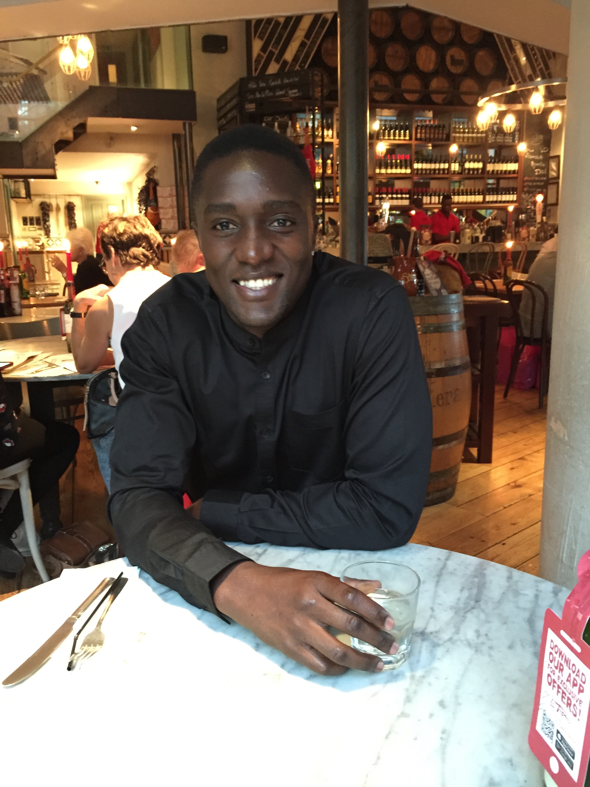
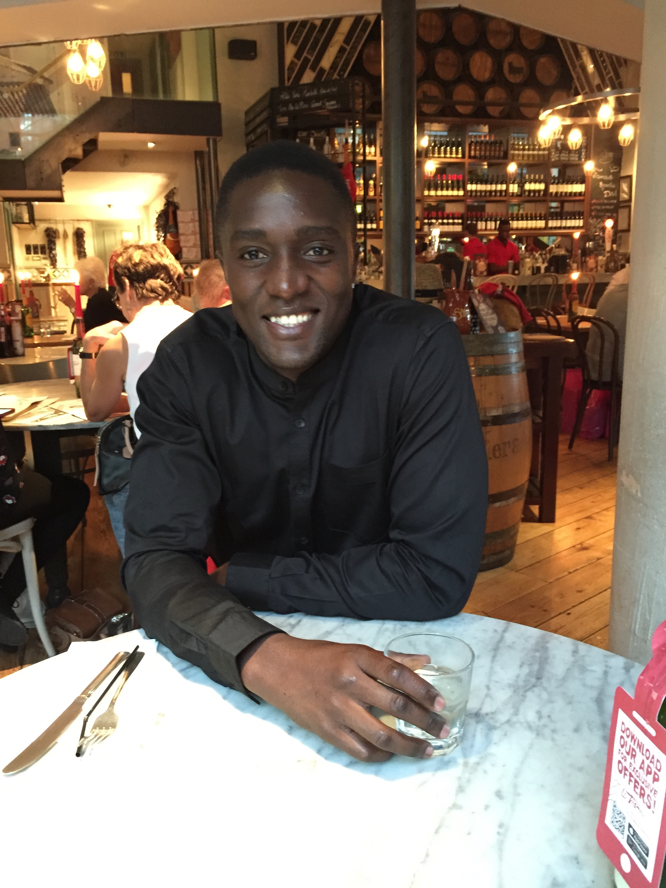
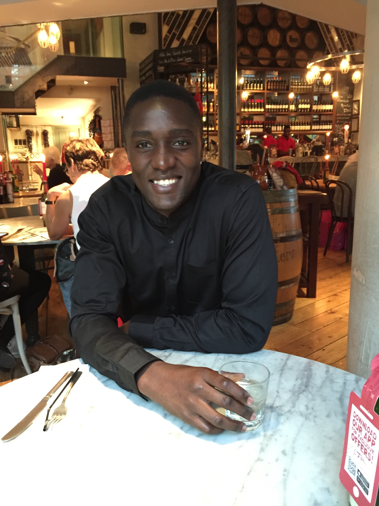

Curtis Osano
Web Developer

Web Developer

I am a highly motivated individual with a true passion for first class web development, since ending my career as a professional footballer. Technology and problem solving have always been an interest of mine and I am particuarly driven by utilising my skills to provide online solutions, whether that be in the form of developing a useful app or creating a fully responsive website. The ability to continue to learn new code both excites and drives me in this profession. Having spent a large part of my career as a professional sportsman I value the importance of team work and the significance of every individual within a team. This is something which really enables me progress in coding working alongside others.
.jpg)

Studied a three month immersive web development course to hone my skills in coding & kickstart my career as a developer and a lifelong learner. The depth of knowledge I learnt is vast and varied from programming fundamental frameworks to launching full-stack web applications. The core technologies taught include JavaScript, jQuery, Ruby, Ruby on Rails, Node.js and AngularJS, with an emphasis on CRUD and RESTful structures within groups and independently. In addition to having a good grounding in the above, I feel fully prepared to quickly pick up new languages and frameworks should the opportunity arise.